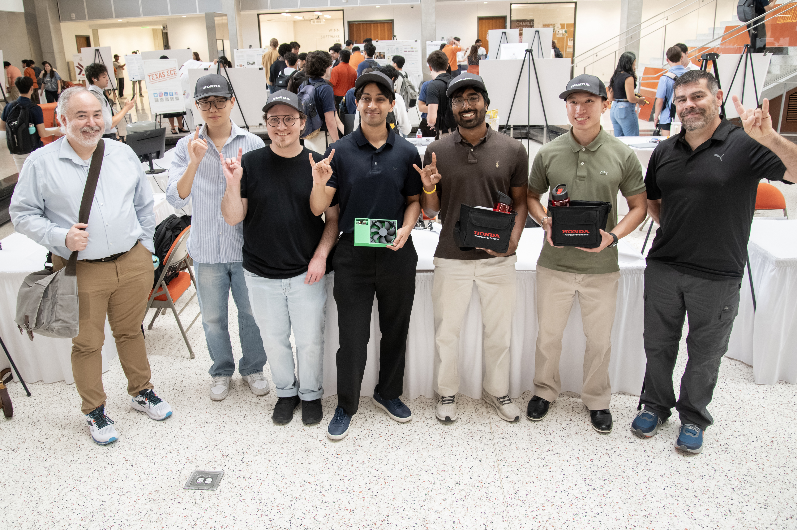
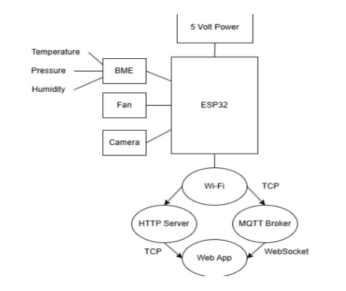
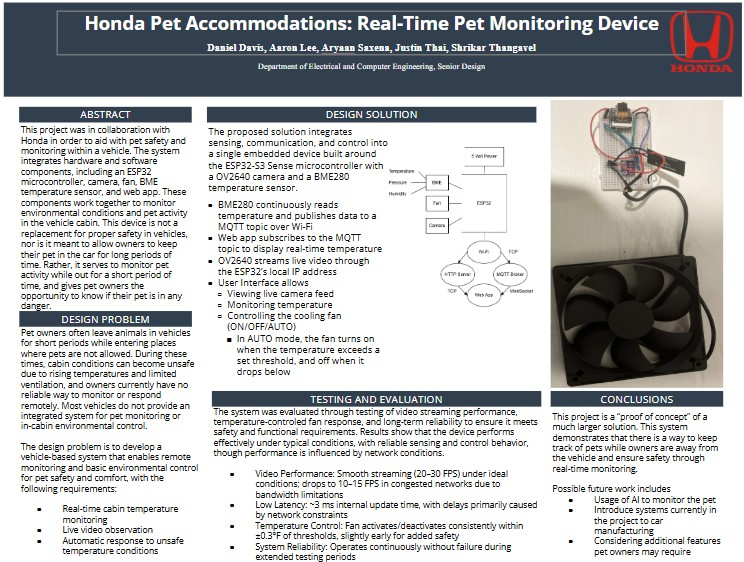

Team-led, Honda-sponsored embedded system for monitoring in-car conditions and protecting pets during short unattended periods.

This project is about solving a very real problem. Leaving pets in cars is dangerous, but people still do it,
often without realizing how fast conditions can change. I led a Honda-sponsored senior design project
to build an embedded system that mounts in a vehicle, monitors cabin conditions, and lets the owner check in and respond
when things become unsafe.
The current prototype runs on a single ESP32-S3 and integrates a BME280 environmental sensor,
a cooling fan, and a camera. Data is sent over Wi-Fi to a dashboard that works on both
web and mobile, so the owner can see cabin conditions and control the fan in real time.
The architecture is intentionally simple so the system is reliable and easy to duplicate. The ESP32-S3 reads temperature, humidity, and pressure from the BME280 and publishes those readings over Wi-Fi using MQTT. At the same time, the ESP32-S3 streams live video from the camera through its local IP address. The dashboard subscribes to the MQTT data to display cabin readings and provides fan control with ON/OFF/AUTO modes. In AUTO mode, the fan turns on when temperature exceeds a set threshold and turns off once it drops below it.

This project was a full-stack embedded build. I had to think like a firmware engineer, a web developer, and a product designer at the same time, while also coordinating milestones and sponsor-facing demos.
We focused on proving the prototype works in realistic conditions, especially for live monitoring and reliability.

The next phase is making the prototype more vehicle-ready and polished.
The goal is to make this feel like a real product. Something a driver could actually trust when they leave their pet in the car for “just a minute.”